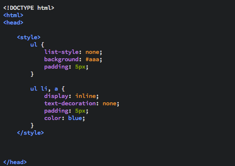
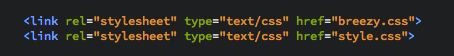

You have seen these before back here when we did navs. Internal style sheets are coded in the <head> section of your HTML file, inside <style></style> tags. However, whilst this is taught on the module, it is not recomended in practice.
This is what internal styling looks like.
The downside to internal CSS is that effects are only made to the file it is contained in. So if you're writing a website such as this one, it is really a necessity to use external style sheets.
Inline styling is where the styling of elements is placed within the tags themselves. Think of attributes, where the attribute is written inside the tag. An example of inline CSS could be: <p style="background: #fda;">styled text</p> which would produce this:
styled text
The problem with inline styling is that it is incredibly tedious and hard to keep track of. For this reason it is certainly reccomended to use the next method (external CSS). This being said, it is useful when you are sure its use is a one-off, that is styling one element in a page that is not necessary to style in an external style sheet, such as a single image or header that differs from the defualt styling of the site.
Here is an example of inline CSS used in this very website, on the Home page.
Referencing an external style sheet is easy and recomended. It takes one like of HTML: <link rel="stylesheet" type="text/css" href="style.css">.
It is important to note that files referenced like this must be in the same folder as your HTML file, if they are in a parent directory use href="../style.css" and if your HTML file is in a folder with a folder of CSS files or images simply reference that folder: href="folder/style.css".
Here is an example of external style sheets being referenced on the Home page of this site.
